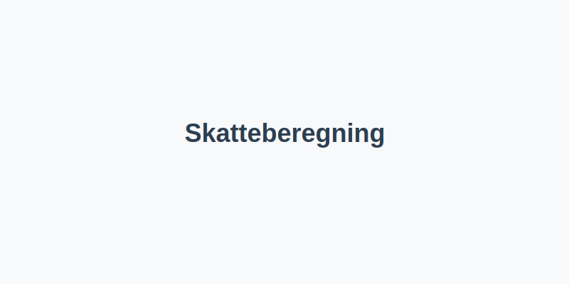
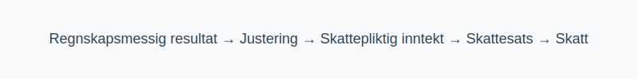

Skatteberegning er prosessen for å fastsette skattepliktig inntekt og beregne skatt som skal betales av både bedrifter og privatpersoner. Dette innebærer å justere regnskapsmessige resultater for skattemessige forskjeller, anvende gjeldende skattesatser og rapportere korrekt via skattemeldingen.
For en samlet oversikt over gjeldende skattesatser, se Skattesats.

1. Grunnleggende steg i skatteberegning
En strukturert fremgangsmåte sikrer korrekt resultat og forenkler rapportering:
| Steg | Beskrivelse |
|---|---|
| 1 | Beregn regnskapsmessig resultat |
| 2 | Juster for skattemessige forskjeller |
| 3 | Fastsett skattepliktig inntekt |
| 4 | Anvend gjeldende skattesats |
| 5 | Beregn forskuddsskatt og restskatt |
| 6 | Rapporter via skattemeldingen |
2. Justeringer for skattemessige forskjeller
| Type justering | Beskrivelse |
|---|---|
| Permanente forskjeller | Ufradragsberettigede kostnader og skattefrie inntekter |
| Midlertidige forskjeller | Tidsforskjeller som reverseres, for eksempel avskrivninger |
Se også Hva er Permanente Forskjeller? og Hva er Midlertidige Forskjeller?.
3. Fastsett skattepliktig inntekt
Beregningen av skattepliktig inntekt tar utgangspunkt i årsresultatet justert for forskjellene over. Les mer i Hva er Skattepliktig Inntekt?.
4. Anvend gjeldende skattesats
| Type skattesats | Sats | Kommentar |
|---|---|---|
| Bedriftsskatt | 22% | Ordinær sats for aksjeselskap (2024) |
| Personlig marginalskatt | Varierende etter trinn | Se Hva er Marginalskatt? |
5. Personlig skatteberegning
Oversikt over hovedtrinn ved beregning av skatt for privatpersoner:
- Beregn alminnelig inntekt: bruttoinntekt minus fradrag som minstefradrag og personfradrag.
- Beregn trygdeavgift og trinnskatt i henhold til gjeldende satser.
- Fastsett total marginalskatt og gjennomsnittlig skattesats.
| Trinn | Inntektsintervall (2024) | Trinnskatt |
|---|---|---|
| 1 | 190 350 – 267 900 kr | 1,7 % |
| 2 | 267 900 – 643 800 kr | 4,0 % |
| 3 | 643 800 – 969 200 kr | 13,2 % |
| 4 | Over 969 200 kr | 16,2 % |
Se Hva er Alminnelig Inntekt? og Hva er Tabelltrekk?.
6. Eksempel på skatteberegning

Diagrammet over illustrerer hovedflyten fra regnskapsmessig resultat til endelig skattekalkyle.
7. Videre steg: Forskuddsskatt og restskatt
Etter beregning av skatt fastsettes forskuddsskatt. Se Hva er Forskuddsskatt?.
Konsekvensene av differanse mellom beregnet og innbetalt skatt fører til restskatt eller tilbakebetaling.
Mer om endelig skatt i skatteoppgjøret se Utlignet skatt.
Gjennom en systematisk tilnærming til skatteberegning sikres korrekt rapportering og bedre oversikt over skatteforpliktelser.